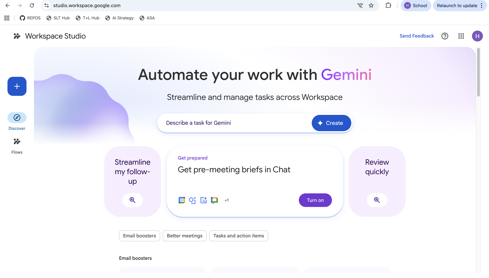
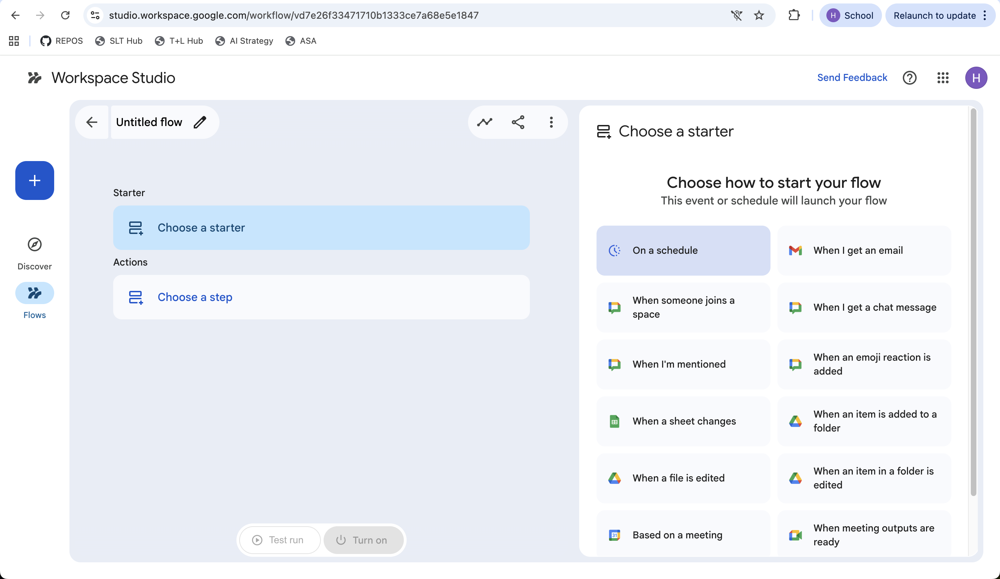
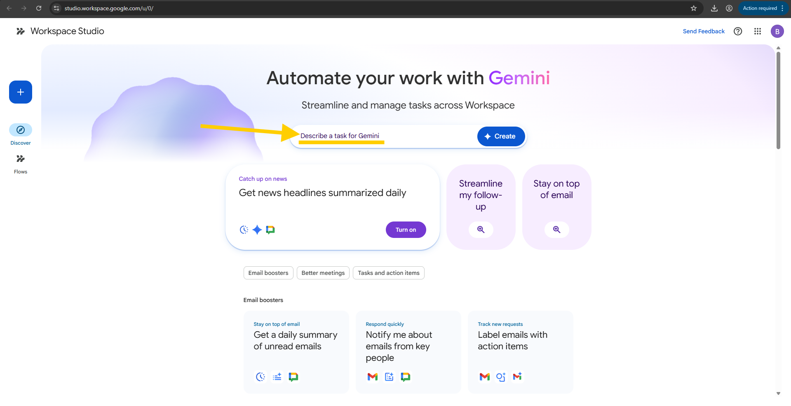
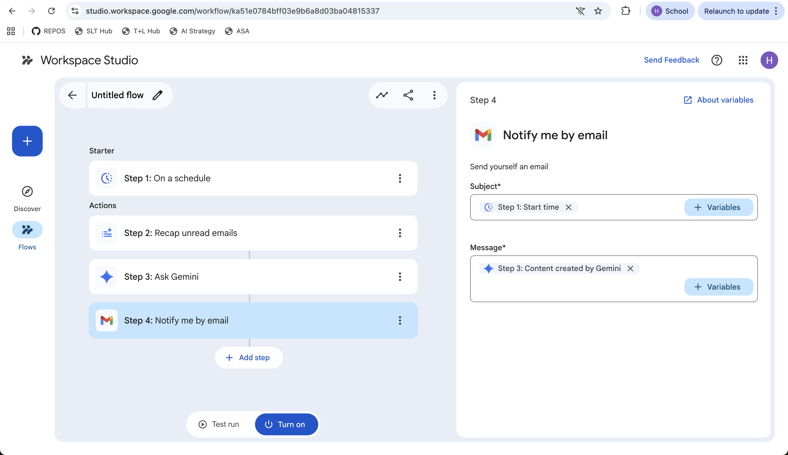

Use Gemini-powered Flows to triage your inbox, build meeting prep briefs, file attachments, and turn repetitive jobs into one-time builds. No code.
Workspace Studio is Google's no-code builder for AI flows — Gemini-powered agents that watch your Gmail, Calendar, Drive and Chat for a trigger, then act for you. This module walks you through building five flows you can deploy this week.
About the visuals: the screenshots in this module are taken directly from Workspace Studio at studio.workspace.google.com — what you see here is what you'll see when you sign in with your AISA account.
Google Workspace Studio (at studio.workspace.google.com) is the place to design, manage, and share AI-powered workflows — Google calls them Flows — that run across your Workspace apps. It is no-code: you describe the work in plain English, and Gemini builds the steps for you.
Each Flow is an AI agent. It waits for an event you specify (a new email arrives, a meeting is in two hours, a file lands in a folder), then runs a chain of steps — read, summarise, decide, draft, save, send — and either acts directly or hands a result to you for approval.
Reusable automations you build once. Each Flow has one Starter and one or more Steps.
A Flow you've turned into a callable command. Invoke it from inside Gemini in Gmail, Drive or Chat.
Pre-built Flows ("Daily summary of unread emails", "Auto-request agenda updates before a meeting") you can copy and customise.

Two routes: visit studio.workspace.google.com directly, or click the Studio shortcut (the small double-arrow icon next to Gemini) inside Gmail, Drive or Chat. Workspace Studio is generally available with all Business and Enterprise Workspace plans — your AISA account already has it.
Every Flow has the same shape:
①
The trigger that wakes the Flow up. A new email matching a filter. A calendar meeting starting in 2 hours. A file added to a Drive folder. Or just a schedule — every day at 7:30 AM.
②
The actions the Flow takes. Read a thread, summarise it with Gemini, label the email, draft a reply, save an attachment, write a row to a Sheet, post in Chat. Steps run in order, top to bottom.
③
Each Step has inputs and outputs. The output of one Step (e.g. "summary") can be plugged into the input of any later Step (e.g. the body of a draft email). This is how Steps chain together.

💡 The mental model: Starter says when. Steps say what. Variables connect them. If you can describe a recurring task as "every time X happens, do Y, then Z, then send me the result" — it's a Flow.
Studio gives you a fixed set of native triggers. Anything you build starts with one of these:
Click + New flow in the top right of Studio and you get three on-ramps. They produce the same kind of Flow — pick whichever matches how clearly you've thought about the task.

Best when…
You can say it in one paragraph. Gemini will draft the Starter and Steps; you tweak.
Best when…
Your task is close to one of the prebuilt patterns. Templates ship pre-wired and you just adapt the filters and recipients.
Best when…
You want full control. Pick the Starter, then add Steps one by one from the Step library.
Always: click ▶ Test run before Turn on. Test run executes the Flow once on your live data so you can see exactly what it would do — without committing to the schedule.
A daily Flow that runs at 7:30 AM, recaps everything in your inbox, asks Gemini to organise it, and emails the result to you before your first lesson. Four steps, native Studio actions only, no code.

Step-by-step
Step 1: Start time; Message ← Step 3: Content created by Gemini.Prompt to paste into Step 3 ("Ask Gemini")
~2.5 hrs
Most of the saving is the morning re-orientation — the briefing tells you what to open first instead of you scrolling through 14 unread.
Two hours before any meeting on your Calendar, this Flow finds the related emails and Drive files, summarises them against the meeting's topic, and saves a one-page prep brief to a "Meeting briefs" Doc folder. You walk into the room ready.
relatedThreadsrelatedFilesrelatedThreads, relatedFiles[date] — [meeting title].doc📌 Variation worth building: add a Step 5 that posts the brief to Chat in a "Just for me" space, so it pops up on your phone too.
In the Meeting prep brief Flow above, what part is "2 hours before any meeting I'm attending"?
When a Google Meet ends and "Take notes for me" produces a notes Doc, this Flow picks it up, extracts only the action items, tags each with an owner, translates them into Arabic for parent-facing items, and posts them in your team's Chat space.
Starter
When an item is added to a folder → "Meet notes"
Steps (in order)
📋 Action items — Year 8 Team Meeting (11 May)
Personal items have been emailed to each owner.
Every time a parent emails back a signed permission slip, this Flow saves the attachment to your Drive folder, logs the sender's name, the student's name (extracted by Gemini), and the date received into a tracking Sheet — then replies to the parent with a confirmation.
| Date | Parent | Student (extracted by Gemini) | File | Reply sent |
|---|---|---|---|---|
| 11 May | Sarah Al-Hashimi | Sami Al-Hashimi (Y5) | 📎 slip-sami.pdf | ✓ |
| 10 May | Khaled Mansour | Lina Mansour (Y5) | 📎 slip-lina.pdf | ✓ |
| 10 May | P. Williams | Ben Williams (Y5) | 📎 ben-form.jpg | ✓ |
| 9 May | F. Nguyen | An Nguyen (Y5) | 📎 permission.pdf | ✓ |
| 8 unmatched parents · Gemini drafted a chase email — review & send | ||||
🛟 Why this one is a quick win: the chase email is the bit teachers always forget. Add a Step that, every Friday at 3pm, compares the tracker Sheet to your class roster and drafts a polite reminder to the parents who haven't responded. Review, then send.
Skills are Flows you've published as reusable commands. Once a Skill exists, you can invoke it from inside Gemini in Gmail, Drive or Chat by typing @ and the Skill's name. The Flow runs on demand, in context, with whatever item you're looking at as input.
If a Flow is something that should run on a schedule or trigger, leave it as a Flow. If it's something you want to summon manually when you need it, publish it as a Skill.
📚 Department win: a team that publishes 6–8 shared Skills (rubric builder, success-criteria builder, parent translator, comment polisher, IEP-language neutraliser, behaviour-note anonymiser) covers most of the recurring AI tasks across a department, with consistent quality.
You want a way to summon the Parent Email Translator only when you actually need it — say, when you're typing a reply to a specific parent. Should you build it as a Flow or publish it as a Skill?
@parent-translator from inside Gemini in Gmail when you choose to.
A Flow that auto-replies to parents is a bigger blast radius than a Sheet formula. Run it once with Test run, read what it would have done, and only then activate.
For anything that goes to parents, students or admin, end the Flow with "draft an email to me to review" rather than "send the email". The time saved is in the drafting, not the sending.
Workspace Studio runs inside the AISA domain, but be careful about Steps that send data to third-party add-ons. If in doubt, stick to native Gmail / Drive / Docs / Sheets / Calendar / Chat Steps.
Studio's Run history tab shows every execution of every Flow with status, inputs and outputs. A weekly scan catches Flows that started misbehaving after a Gmail filter changed.
The professional accountability principle still applies: any email, comment, or document that goes out under your name is yours, even if a Flow drafted it. See the AI Ethics module for the wider frame.